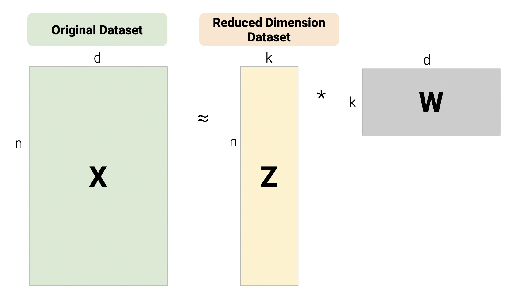
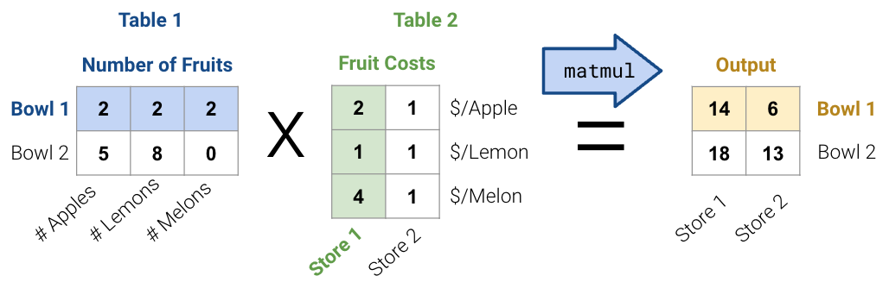
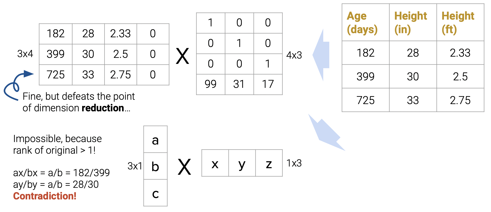
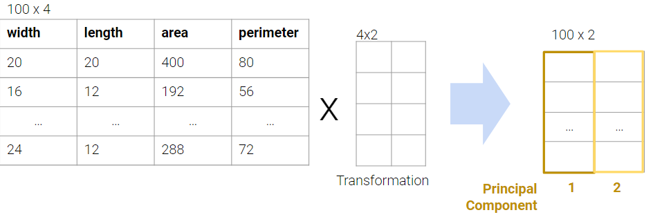
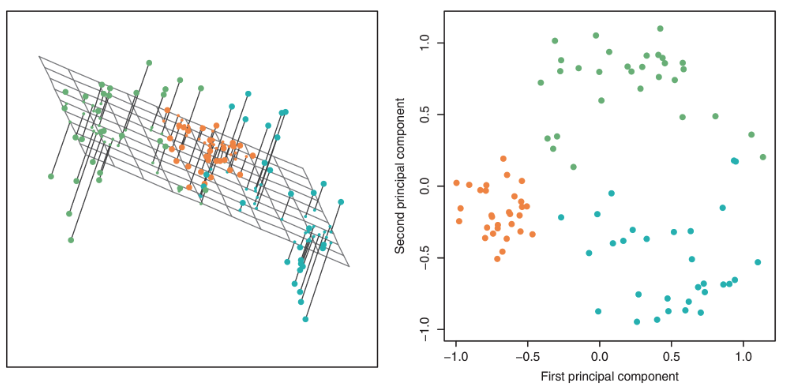
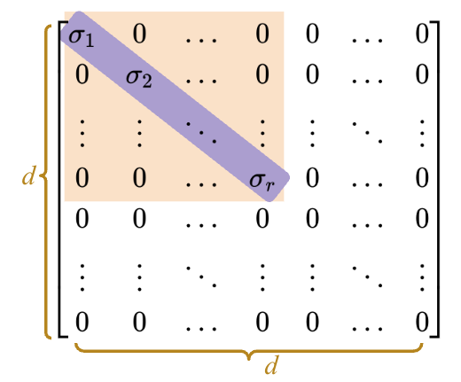
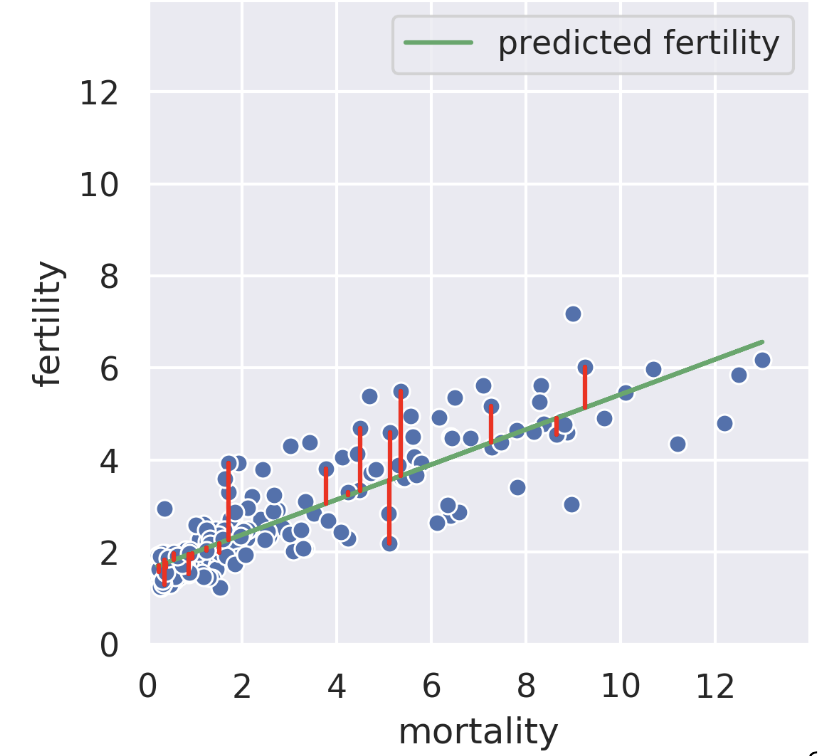

Discuss the dimensionality of a dataset and strategies for dimensionality reduction
Define and carry out the procedure of PCA
Understand the connection between PCA and SVD
Dimensionality
Previously, we have been working with data tables with rows and columns. These rows and columns correspond to observations and attributes about said observations. Now, we have to be a bit more clear with our wording to follow the language of linear algebra.
Suppose we have a dataset of:
N observations (data points/rows)
d attributes (features/columns)
In Linear Algebra, we think of data being a collection of vectors. Vectors have a dimension, meaning they have some number of unique elements. Row and column now denote the direction a vector is written (horizontally, like a row, or vertically, like a column):
Linear Algebra views our data as a matrix:
N row vectors in a d-Dimensional space, OR
d column vectors in an N-Dimensions space
Dimensionality of data is a complex topic. Sometimes, it is clear from looking at the number of rows/columns, but other times it is not.
So far, we’ve used visualizations like rugplots or scatterplots to help us identify clusters in our dataset. Since we humans are 3D beings, we can’t visualize beyond three dimensions, but many datasets come with more than three features. In order to visualize multidimensional data, we can reduce the dataset to lower dimensions through dimensionality reduction.
For example, the dataset below has 4 columns, but the Weight (lbs) column is actually just a linear transformation of the Weight (kg) column. Thus, no new information is captured, and the matrix of our dataset has a (column) rank of 3! Therefore, despite having 4 columns, we still say that this data is 3-dimensional.
Plotting the weight columns together reveals the key visual intuition. While the two columns visually span a 2D space as a line, the data does not deviate at all from that singular line. This means that one of the weight columns is redundant! Even given the option to cover the whole 2D space, the data below does not. It might as well not have this dimension, which is why we still do not consider the data below to span more than 1 dimension.
What happens when there are outliers? Below, we’ve added one outlier point to the dataset above, and just that is enough to change the rank of the matrix from 1 to 2 dimensions. However, the data is still very much 1-dimensional. Here, we can say that the data is intinsically 1-dimensional.
The Intrinsic Dimension of a dataset is the minimal set of dimensions needed to approximately represent the data.
As such, dimensionality reduction is generally an approximation of the original data that’s achieved by projecting the data onto a desired dimension. However, there are many ways to project a dataset onto a lower dimension. How do we choose the best one?
In general, we want the projection that is the best approximation for the original data (the graph on the right). In other words, we want the projection that captures the most variance of the original data. In the next section, we’ll see how this is calculated.
Matrix Decomposition (Factorization)
One linear technique to dimensionality reduction is via matrix decomposition, which is closely tied with matrix multiplication. In this section, we will decompose our data matrix X into a lower-dimensional matrix Z that when multiplied by W approximately recovers the original data.

First, consider the matrix multiplication example below:

For table 1, each row of the fruits matrix represents one bowl of fruit; for example, the first bowl/row has 2 apples, 2 lemons, and 2 melons.
For table 2, each column of the dollars matrix represents the cost of fruit at a store; for example, the first store/column charges 2 dollars for an apple, 1 dollar for a lemon, and 4 dollars for a melon.
The output is the cost of each bowl at each store.
In general, there are two ways to interpret matrix multiplication:
Row dot column to get each datapoint. In this view, we perform multiple linear operations on the data
Linear transformation of columns
We will be using the second interpretation to link matrix multiplication with matrix decomposition, where we receive a lower dimensional representation of data along with a transformation matrix.
Matrix factorization is the opposite of matrix multiplication. Just like real numbers, there exists infinite ways to decompose a matrix into a product of two matrices. That said, the rank of the matrix puts certain constraints on the factorization.

In the above image, you can see how at the higher end, when we approximate our data to have higher dimensions than the rank of the data, we will get a column of 0s. This decomposition works mathematically but goes against the idea of dimensionality reduction. At the lower end, in a 1D representation, we fail to generate an accurate decomposition as now we have lower number of dimensions than the rank of the data.
In practice we will be working with a lot of features in our dataset, so we want to usually construct decompositions where the dimensionality is below the rank of the original matrix. While we will not be able to recover our data exactly, we will still be able to provide approximate reconstructions of the matrix.
In the next section, we will discuss a method to automatically and approximately factorize given data. Since some approximations are better than the others, we will also discuss how the method helps us capture a lot of information in low number of dimensions.
Principal Component Analysis (PCA)
In PCA, our goal is to transform observations from high-dimensional data down to low dimensions (often 2, as most visualizations are 2D) through linear transformations. In other words, we want to find a linear transformation that creates a low-dimension representation that captures as much of the original data’s total variance as possible.

We often perform PCA during the Exploratory Data Analysis (EDA) stage of our data science lifecycle when we don’t know what model to use. It helps us with:
Visually identifying clusters of similar observations in high dimensions.
Removing irrelevant dimensions if we suspect that the dataset is inherently low rank. For example, if the columns are collinear, there are many attributes but only a few mostly determine the rest through linear associations.
Creating a transformed dataset of decorrelated features.

There are two equivalent ways of framing PCA:
Finding directions of maximum variability in the data
Finding the low dimensional (rank) matrix factorization that best approximates the data
In the first approach, we can find the variances of each attribute and then keep the two attributes with the highest variance. However, in this appraoch, we are limited to just working with attributes individually not as a combination. Following the PCA procedure (as described in the next section), can help us capture the most variance in the data (even higher than first approach) by using linear combinations of features
PCA Procedure (Overview)
To perform PCA on a matrix:
Center the data matrix by subtracting the mean of each attribute column.
To find the \(i\)-th principal component \(v_i\):
\(v\) is a unit vector that linearly combines the attributes.
\(v\) gives a one-dimensional projection of the data.
\(v\) is chosen to minimize the sum of squared distances between each point and its projection onto \(v\).
Choose \(v\) such that it is orthogonal to all previous principal components.
The \(k\) principal components capture the most variance of any \(k\)-dimensional reduction of the data matrix.
In practice, however, we don’t carry out the procedures in step 2 because they take too long to compute. Instead, we use singular value decomposition (SVD) to efficiently find all principal components.
Deriving PCA as Error Minimization
In this section, we will derive PCA keeping the following goal in mind: Minimize the reconstruction loss for our matrix factorization model. The reconstruction loss is defined below:
There exists many solutions to the above but we will constrain our model such that W is a row-orthonormal matrix (i.e. \(WW^T=I\)) where the rows of W are our Principal Components.
In our derivation, lets first work with the case where \(k=1\). Here Z will be an \(nx1\) vector and W will be a \(1xd\) vector.
\[\begin{aligned}
L(z,w) &= \frac{1}{n}\sum_{i=1}^{n}(X_i - z_{i}w)(X_i - z_{i}w)^T \\
&= \frac{1}{n}\sum_{i=1}^{n}(X_{i}X_{i}^T - 2z_{i}X_{i}w^T + z_{i}^{2}ww^T)\\
&= \frac{1}{n}\sum_{i=1}^{n}(-2z_{i}X_{i}w^T + z_{i}^{2}) & \text{(First term is constant and }ww^T=1\text{)} \\
\frac{\partial{L(Z,W)}}{\partial{z_i}} &= \frac{1}{n}(-2z_{i}X_{i}w^T + 2z_{i}) \\
z_i &= X_iw^T & \text{(Setting derivative equal to 0 and solving for }z_i\text{)}
\end{aligned}\]
We can now substitute our solution for \(z_i\) in our loss function:
Now, we need to minimize our loss with respect to w. Since we have a negative sign, one way we can do this is by making w really big but we also have the orthonormality constraint \(ww^T=1\). We can add this constraint by using \(\lambda\), our Lagrange multiplier.
w is a unitary eigenvector of the covariance matrix and
the error is minimized when w is the eigenvector with the largest eigenvalue \(\lambda\)
This derivation can inductively be used for the next principal component (not shown).
The final takeaway from this derivation is that the principal components are the eigenvectors with the largest eigenvalues of the covariance matrix. These are the directions of the maximum variance of the data.
Singular Value Decomposition (SVD)
Singular value decomposition (SVD) is an important concept in linear algebra. Since this class requires a linear algebra course (MATH 54, 56 or EECS 16A) as a pre/co-requisite, we assume you have taken or are taking a linear algebra course, so we won’t explain SVD in its entirety. In particular, we will go over:
Why SVD is a valid decomposition of rectangular matrices
Why PCA is an application of SVD.
We will not go much into the theory and details of SVD. Instead, we will only cover what is needed for a data science interpretation. If you’d like more information, check out EECS 16B Note 14 or EECS 16B Note 15.
[Linear Algebra] Orthonormality
Orthonormal is a combination of two words: orthogonal and normal.
When we say the columns of a matrix are orthonormal, we say that 1. The columns are all orthogonal to each other (all pairs of columns have a dot product of zero) 2. All columns are unit vectors (the length of each column vector is 1)
Orthonormal matrices have a few important properties
Orthonormal inverse: If an \(m \times n\) matrix \(Q\) has orthonormal columns, \(QQ^T= Iₘ\) and \(Q^TQ=Iₙ\).
Rotation of coordinates: the linear transformation represented by an orthonormal matrix is often a rotation (and less often a reflection). We can imagine columns of the matrix as where the unit vectors of the original space will land.
[Linear Algebra] Diagnomal Matrices
Diagonal matrices are square matrices with non-zero values on the diagonal axis and zero everywhere else.
Right-multiplied diagonal matrices scale each column up or down by a constant factor. Geometrically, this transformation can be viewed as scaling the coordinate system.
Singular value decomposition (SVD) describes a matrix \(X\)’s decomposition into three matrices: \[ X = U \Sigma V^T \]
Let’s break down each of these terms one by one.
\(U\)
\(U\) is an \(n \times d\) matrix: \(U \in \mathbb{R}^{n \times d}\).
Its columns are orthonormal
\(\bar{u_i}^T\bar{u_j} = 0\) for all pairs \(i, j\)
all vectors \(\bar{u_i}\) are unit vectors with length = 1.
Columns of U are called the left singular vectors.
\(UU^T = I_n\) and \(U^TU = I_d\).
We can think of \(U\) as a rotation.
\(\Sigma\)
\(\Sigma\) is a \(d \times d\) matrix: \(\Sigma \in \mathbb{R}^{d \times d}\).
The majority of the matrix is zero
It has \(r\)non-zerosingular values, and \(r\) is the rank of \(X\)
Diagonal values (singular values\(\sigma_1, \sigma_2, ... \sigma_r\)), are ordered from greatest to least \(\sigma_1 > \sigma_2 > ... > \sigma_r\)
We can think of \(\Sigma\) as scaling.

\(V^T\)
\(V^T\) is an \(d \times d\) matrix: \(V \in \mathbb{R}^{d \times d}\).
Columns of \(V\) are orthonormal, so the rows of \(V^T\) are orthonormal
Columns of \(V\) are called the right singular vectors.
\(VV^T = V^TV = I_d\)
We can think of \(V\) as a rotation.
SVD: Geometric Perspective
We’ve seen that \(U\) and \(V\) represent rotations, and \(\Sigma\) represents scaling. Therefore, SVD says that any matrix can be decomposed into a rotation, then a scaling, and another rotation.
SVD in NumPy
For this demo, we’ll continue working with our rectangular dataset from before with \(n=100\) rows and \(d=4\) columns.
Code
import pandas as pdimport seaborn as snsimport matplotlib.pyplot as pltimport numpy as npnp.random.seed(23) #kallistiplt.rcParams['figure.figsize'] = (4, 4)plt.rcParams['figure.dpi'] =150sns.set()rectangle = pd.read_csv("data/rectangle_data.csv")rectangle.head(5)
In NumPy, the SVD algorithm is already written and can be called with np.linalg.svd (documentation). There are multiple versions of SVD; to get the version that we will follow, we need to set the full_matrices parameter to False.
U, S, Vt = np.linalg.svd(rectangle, full_matrices =False)
First, let’s examine U. As we can see, it’s dimensions are \(n \times d\).
U.shape
The first 5 rows of U are shown below.
pd.DataFrame(U).head(5)
\(\Sigma\) is a little different in NumPy. Since the only useful values in the diagonal matrix \(\Sigma\) are the singular values on the diagonal axis, only those values are returned and they are stored in an array.
Our rectangle_data has a rank of \(3\), so we should have 3 non-zero singular values, sorted from largest to smallest.
S
It seems like we have 4 non-zero values instead of 3, but notice that the last value is so small (\(10^{-15}\)) that it’s practically \(0\). Hence, we can round the values to get 3 singular values.
np.round(S)
To get S in matrix format, we use np.diag.
Sm = np.diag(S)Sm
Finally, we can see that Vt is indeed a \(d \times d\) matrix.
Vt.shape
pd.DataFrame(Vt)
To check that this SVD is a valid decomposition, we can reverse it and see if it matches our original table (it does, yay!).
pd.DataFrame(U @ Sm @ Vt).head(5)
PCA with SVD
Principal Component Analysis (PCA) and Singular Value Decomposition (SVD) can be easily mixed up, especially when you have to keep track of so many acronyms. Here is a quick summary:
SVD: a linear algebra algorithm that splits a matrix into 3 component parts.
PCA: a data science procedure used for dimensionality reduction that uses SVD as one of the steps.
In order to get the first \(k\) principal components from an \(n \times d\) matrix \(X\), we:
Center \(X\) by subtracting the mean from each column. Notice how we specify axis=0 so that the mean is computed per column.
Get the Singular Value Decomposition of centered \(X\): \(U\), \(Σ\) and \(V^T\)
U, S, Vt = np.linalg.svd(centered_df, full_matrices =False)Sm = pd.DataFrame(np.diag(np.round(S, 1)))
Multiply either \(UΣ\) or \(XV\). Mathematically, these give the same result, but computationally, floating point approximation results in slightly different numbers for very small values (check out the right-most column in the cells below).
# UΣ pd.DataFrame(U @ np.diag(S)).head(5)
# XVpd.DataFrame(centered_df @ Vt.T).head(5)
Take the first \(k\) columns of \(UΣ\) (or \(XV\)). These are the first \(k\) principal components of \(X\).
two_PCs = (U @ np.diag(S))[:, :2] # using UΣ two_PCs = (centered_df @ Vt.T).iloc[:, :2] # using XVpd.DataFrame(two_PCs).head()
(Bonus) PCA vs. Regression
Regression: Minimizing Horizontal/Verticle Error
Suppose we know the child mortality rate of a given country. Linear regression tries to predict the fertility rate from the mortality rate; for example, if the mortality is 6, we might guess the fertility is near 4. The regression line tells us the “best” prediction of fertility given all possible mortality values by minimizing the root mean squared error [see vertical red lines, only some shown].

We can also perform a regression in the reverse direction, that is, given the fertility, we try to predict the mortality. In this case, we get a different regression line which minimizes the root mean squared length of the horizontal lines.
SVD: Minimizing Perpendicular Error
The rank 1 approximation is close but not the same as the mortality regression line. Instead of minimizing horizontal or vertical error, our rank 1 approximation minimizes the error perpendicular to the subspace onto which we’re projecting. That is, SVD finds the line such that if we project our data onto that line, the error between the projection and our original data is minimized. The similarity of the rank 1 approximation and the fertility was just a coincidence. Looking at adiposity and bicep size from our body measurements dataset, we see the 1D subspace onto which we are projecting is between the two regression lines.
Beyond 1D and 2D
In higher dimensions, the idea behind principal components is just the same! Suppose we have 30-dimensional data and decide to use the first 5 principal components. Our procedure minimizes the error between the original 30-dimensional data and the projection of that 30-dimensional data on to the “best” 5-dimensional subspace. See CS189 for more details.
(Bonus) Automatic Factorization
One key fact to remember is that the decomposition are not arbitrary. The rank of a matrix limits how small our inner dimensions can be if we want to perfectly recreate our matrix. The proof for this is out of scope.
Even if we know we have to factorize our matrix using an inner dimension of R, that still leaves a large space of solutions to traverse. What if we have a procedure to automatically factorize a rank R matrix into an R dimensional representation with some transformation matrix?
Imagine a 1000-dimensional dataset: If the rank is only 5, it’s much easier to do EDA after this mystery procedure.
What if we wanted a 2D representation? It’s valuable to compress all of the data that is relevant onto as few dimensions as possible in order to plot it efficiently. Some 2D matrices yield better approximations than others. How well can we do?
(Bonus) Proof of Component Score
The proof defining component score is out of scope for this class, but it is included below for your convenience.
Setup: Consider the design matrix \(X \in \mathbb{R}^{n \times d}\), where the \(j\)-th column (corresponding to the \(j\)-th feature) is \(x_j \in \mathbb{R}^n\) and the element in row \(i\), column \(j\) is \(x_{ij}\). Further, define \(\tilde{X}\) as the centered design matrix. The \(j\)-th column is \(\tilde{x}_j \in \mathbb{R}^n\) and the element in row \(i\), column \(j\) is \(\tilde{x}_{ij} = x_{ij} - \bar{x_j}\), where \(\bar{x_j}\) is the mean of the \(x_j\) column vector from the original \(X\).
Variance: Construct the covariance matrix: \(\frac{1}{n} \tilde{X}^T \tilde{X} \in \mathbb{R}^{d \times d}\). The \(j\)-th element along the diagonal is the variance of the \(j\)-th column of the original design matrix \(X\):
SVD: Suppose singular value decomposition of the centered design matrix \(\tilde{X}\) yields \(\tilde{X} = U \Sigma V^T\), where \(U \in \mathbb{R}^{n \times d}\) and \(V \in \mathbb{R}^{d \times d}\) are matrices with orthonormal columns, and \(\Sigma \in \mathbb{R}^{d \times d}\) is a diagonal matrix with singular values of \(\tilde{X}\).
\[\begin{aligned}
\tilde{X}^T \tilde{X} &= (U \Sigma V^T )^T (U \Sigma V^T) \\
&= V \Sigma U^T U \Sigma V^T & (\Sigma^T = \Sigma) \\
&= V \Sigma^2 V^T & (U^T U = I) \\
\frac{1}{n} \tilde{X}^T \tilde{X} &= \frac{1}{n} V \Sigma V^T =V \left( \frac{1}{n} \Sigma \right) V^T \\
\frac{1}{n} \tilde{X}^T \tilde{X} V &= V \left( \frac{1}{n} \Sigma \right) V^T V = V \left( \frac{1}{n} \Sigma \right) & \text{(right multiply by }V \rightarrow V^T V = I \text{)} \\
V^T \frac{1}{n} \tilde{X}^T \tilde{X} V &= V^T V \left( \frac{1}{n} \Sigma \right) = \frac{1}{n} \Sigma & \text{(left multiply by }V^T \rightarrow V^T V = I \text{)} \\
\left( \frac{1}{n} \tilde{X}^T \tilde{X} \right)_{jj} &= \frac{1}{n}\sigma_j^2 & \text{(Define }\sigma_j\text{ as the} j\text{-th singular value)} \\
\frac{1}{n} \sigma_j^2 &= \frac{1}{n} \sum_{i=i}^n (x_{ij} - \bar{x_j})^2
\end{aligned}\]
The last line defines the \(j\)-th component score.